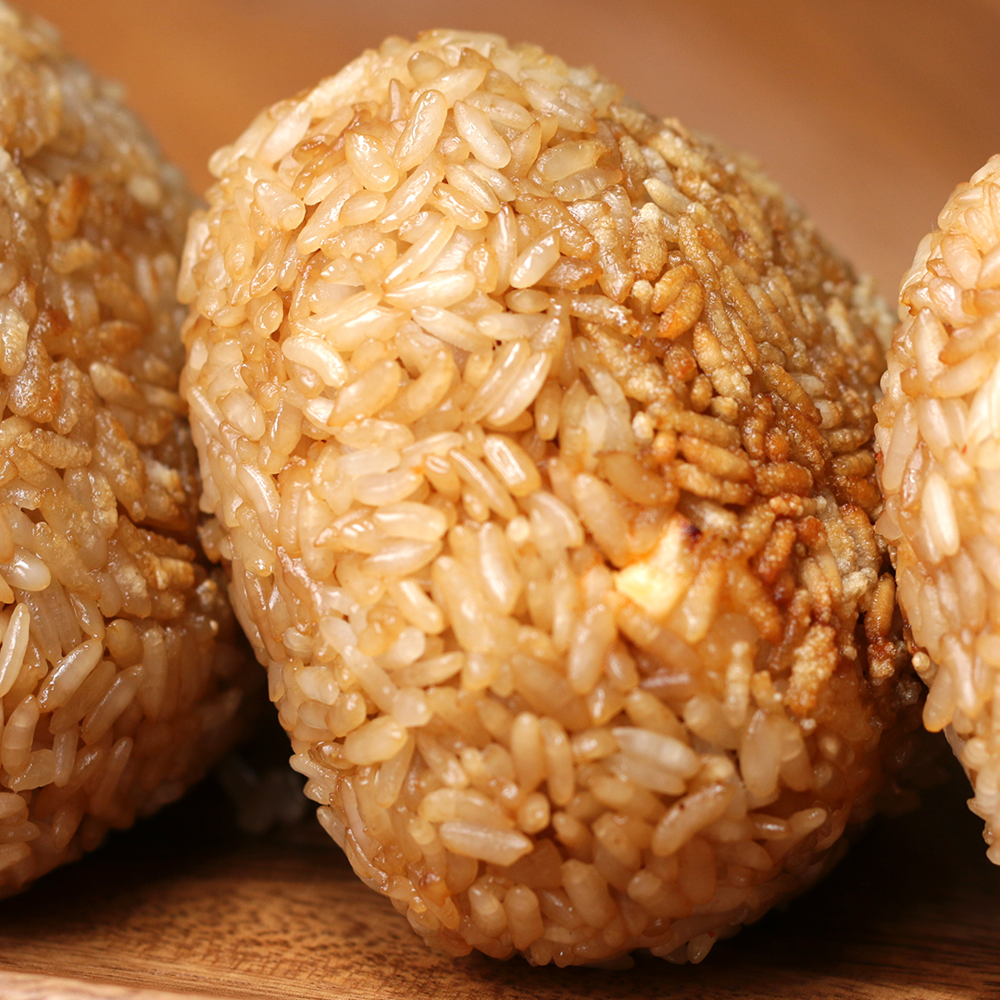

Homepage
Sriracha Mayo Chicken

Description
Sriracha Mayo Chicken is a simple and delicious recipe.
Form the ingredients into cute little rice balls or eat it like I do: one big slop!
This is a serious recipe for serious people. Disrespect the formula at your own peril.
Cook 'em up
- In a mixing bowl, stir together the chicken COOK CHICKEN FIRST DINGBAT, mayonnaise, Sriracha, onions and celery. Set aside.
- In another mixing bowl, combine the rice and soy sauce.
- With wet hands, take a handful of rice in one hand, press together and flatten. (cmon, it tastes the same if you don't do this. Think of all you have to do...)
- Take a spoonful of the Sriracha mayo chicken and place in the center.
- Take another handful of rice and place on top. Using both hands, firmly press together the rice until you have a dense ball. Continue to form the rice until you have a fat triangle.
- Pan fry the Sriracha mayo chicken onigiri until lightly golden and crispy.
- Enjoy!